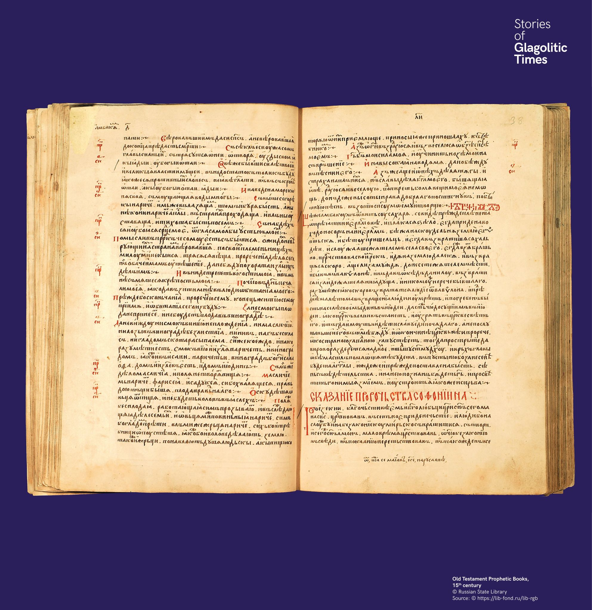

A glagolita írás határai
A glagolita írás túllépte Bulgária határait. Horvátországban egészen a 19. századig használták, Oroszországban pedig bolgár glagolita és cirill kéziratok alapozták meg az irodalmi hagyományt.


A glagolita írás túllépte Bulgária határait. Horvátországban egészen a 19. századig használták, Oroszországban pedig bolgár glagolita és cirill kéziratok alapozták meg az irodalmi hagyományt.
Глаголицата преминава границите на България. В Хърватия се използва чак до XIX век, а в Русия българските ръкописи стават основа на литературна традиция.